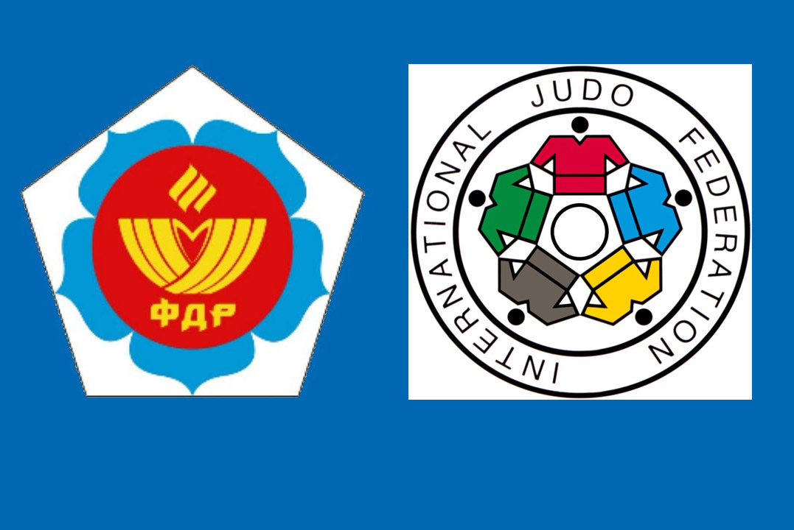

Задняя подножка

Картинка с выполнением приёма
Описание
- Бросок выполняется с захвата противника за одежду у локтя и на
плече со стороны его впереди стоящей ноги
-
С шагом вперёд и в сторону движения руки и туловища вниз осадить противника на эту ногу
-
Поставить ногу за опорную ногу противника, подбивая её, и рывком руками бросить противника через ногу
Условия для броска
- Взять свой захват
- Навязать свой ритм схватки
- Воспользоваться возможностью для броска
Приминение подножек
